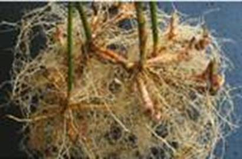
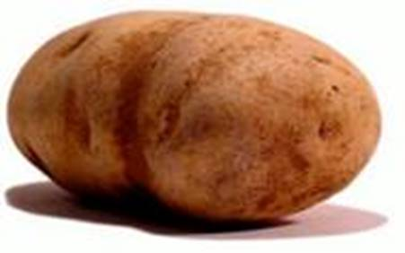
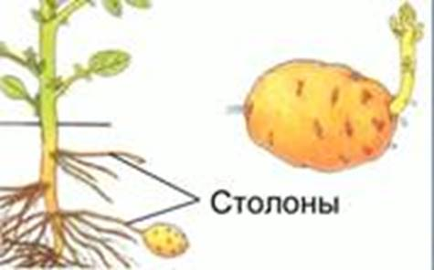
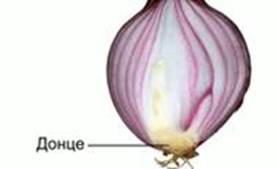
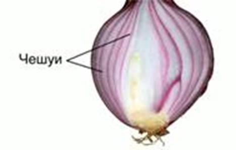
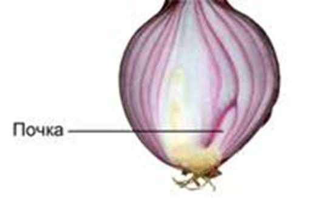
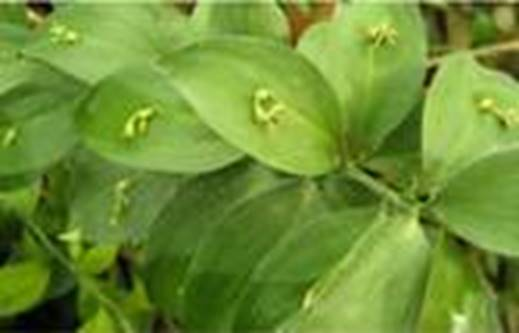
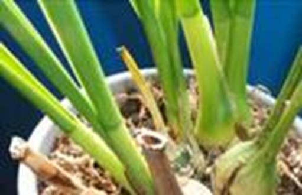

Общие сведения
Наряду с типичными фотосинтезирующими побегами у многих растений также развиваются другие, видоизмененные.
Многие многолетние травянистые растения имеют подземные запасающие побеги (корневище аира, клубни картофеля, луковицы лилии). Отложенные в них питательные вещества позволяют растению активно расти весной будущего сезона.
Корневища
Корневища имеют крапива, ирис, ландыш и др. Внешне корневище (см. Рис. 1) напоминает корень, но имеет почки и пленчатые чешуйки (видоизмененные листья). От корневища могут отрастать придаточные корни, а из верхушечной и пазушной почек развиваться молодые надземные побеги. Если участок корневища посадить в почву, он даст корни, и постепенно из него разовьется новое самостоятельное растение.

Рис. 1. Корневище
Клубни
Клубни образуются у картофеля (см. Рис. 2), хохлатки, топинамбура.

Рис. 2. Клубень картофеля
Столоны (см. Рис. 3) – длинные тонкие подземные побеги, из которых развиваются клубни. Клубни – это верхушечные утолщения столонов.

Рис. 3. Столоны
Глазки (см. Рис. 4) – углубления на поверхности клубня, его почки. Глазков больше на верхушке клубня.

Рис. 4. Глазки
Клубни основаниями соединены со столонами. В клубнях откладывается крахмал.
Луковицы
Луковицы образованы у тюльпана, лилии, лука, нарцисса.
Донце (см. Рис. 5) – практически плоский стебель, расположенный в нижней части луковицы.

Рис. 5. Донце
Чешуи (см. Рис. 6) – видоизмененные листья. Наружные чешуи сухие и кожистые, а внутренние – мясистые. В них расположены запасы воды с растворенными сахаром и другими веществами.

Рис. 6. Чешуи
В пазухах чешуй расположены почки (см. Рис. 7).

Рис. 7. Почка
При прорастании луковицы формируется мочковатая корневая система.
Детки – дочерние луковицы. Способны к развитию самостоятельного взрослого растения.
Клубнелуковица накапливает питательные вещества в донце, а не в чешуях.
Надземные видоизменения стеблей
У акации и др. существуют защитные приспособления – шипы, которые защищают их от поедания животными. Также колючки служат для уменьшения испарения воды.
У рускуса (см. Рис. 8) видоизмененные стебли выполняют функцию фотосинтеза и внешне сильно похожи на листья.

Рис. 8. Рускус
Усы земляники – сильно уделенные видоизмененные побеги, служащие для вегетативного размножения.
В утолщенных стеблях орхидных запасаются питательные вещества (см Рис. 9).

Рис. 9. Запасающие стебли орхидных
Усики винограда развиваются из пазушных почек, выполняют функцию прикрепления стебля к субстрату.
Стебли суккулентных растений (кактусы) выполняют функцию запаса воды.
Строение клубня
Возьмите клубень картофеля, найдите его основание и верхушку. Рассмотрите глазки и их почки. Каково их расположение? При помощи бритвы сделайте тонкий поперечный срез клубня. Рассмотрите его на срез, сравните с поперечным срезом стебля. Зарисуйте.
Капните на срез клубня йодом. Опишите и объясните наблюдения. Аргументируйте тот факт, что клубень является видоизмененным побегом.
Луковица
Рассмотрите внешнее строение луковицы репчатого лука. Опишите значение наружных сухих чешуй. Зарисуйте продольный разрез луковицы. Обозначьте чешуи, донце и почку. Аргументируйте тот факт, что луковицы – видоизмененный подземный побег.
Возьмите 2 луковицы репчатого лука, поместите их в банки с узким горлышком, заполненные водой. Одну из банок поставьте на свет, а другую в темное теплое место. Через несколько дней на обеих луковицах появятся листья и придаточные корни. Объясните причину роста луковиц.
Знаете ли вы, что…
Гладиолус имеет клубнелуковицу. Внешне она напоминает луковицу, но ее листовые чешуи сухие. А запасные продукты откладываются в стеблевой части.
Орхидеи (цимбидиум) образуют надземные запасающие стебли – бульбы.
Список литературы
1. Биология. Бактерии, грибы, растения. 6 кл.: учеб. для общеобразоват. учреждений / В.В. Пасечник. – 14-е изд., стереотип. – М.: Дрофа, 2011. – 304 с.: ил.
2. Тихонова Е.Т., Романова Н.И. Биология, 6. – М.: Русское слово.
3. Исаева Т.А., Романова Н.И. Биология, 6. – М.: Русское слово.
Дополнительные рекомендованные ссылки на ресурсы сети Интернет
1. Scienceland.info (Источник).
2. Sbio.info (Источник).
Рекомендованное домашнее задание
1. Биология. Бактерии, грибы, растения. 6 кл.: учеб. для общеобразоват. учреждений / В.В. Пасечник. – 14-е изд., стереотип. – М.: Дрофа, 2011. – 304 с.: ил. – с. 134, задания и вопрос 2, 6 (Источник).
2. Какое строение имеет луковица?
3. Перечислите надземные видоизменения стеблей. Назовите их функции.
4. * Обсудите с семьей, друзьями использование человеком видоизмененных побегов.